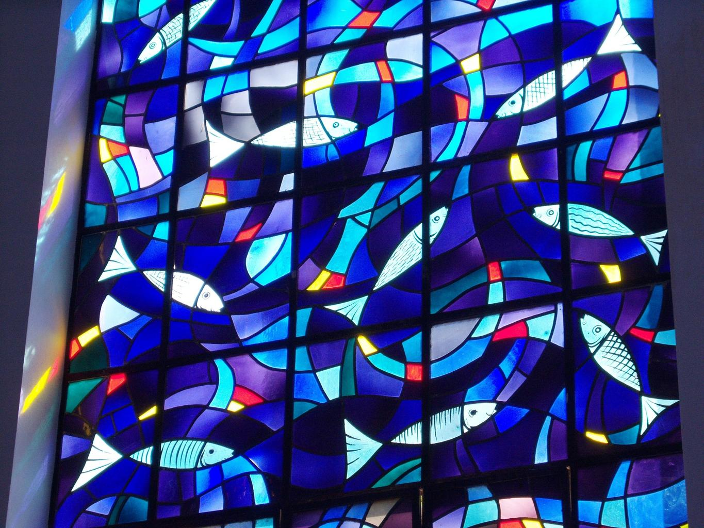

Stained glass is not painted, but actually changes color through the addition of tiny pieces of
metal. Clear glass is made by heating sand until it becomes a liquid. Once melted, the liquid
sand can be poured into molds to create flat sheets for use as windows. The color is created
from tiny pieces of metal that become trapped as the glass cools.
For example, colored glass can be created with tiny gold and silver particles. These particles
are called nanoscale, meaning they are very small, approximately 100,000 times smaller than
the width of a piece of human hair.
When the particles are this small, they appear as colors you might not expect. Gold has a yellow
color, but round gold nanoscale particles appear red. Round silver particles with nanoscale
sizes have a yellow color.
The color of metal particles depends on particle size, particle shape, what it’s made of, and their
environment. Tiny gold and silver particles can be nearly any color of the rainbow!
Explore these properties by “coloring” a virtual stained glass image. The properties of many
materials depend on their particle size. New properties are found when particles are nanoscale.
Scientists and engineers are studying these properties to find new materials that address needs
related to solar energy, medicine, national security, and more.
References:
Bernard H. W. S. De Jong, Ruud G. C. Beerkens, and Peter A. van Nijnatten, Glass, in “Ullmann’s
Encyclopedia of Industrial Chemistry” Wiley-VCH Verlag GmbH & Company Publisher, 2000.
Nathan E. Motl, Alison F. Smith, Christopher J. DeSantis, Sara E. Skrabalak, Engineering Plasmonic Metal
Colloids through Composition and Structural Design, Chemical Society Reviews, 2014, 43, 3823-3834.